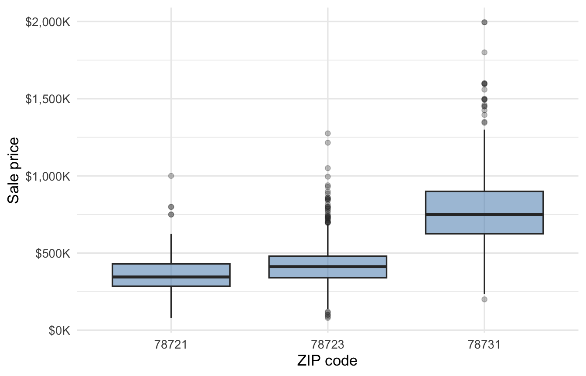
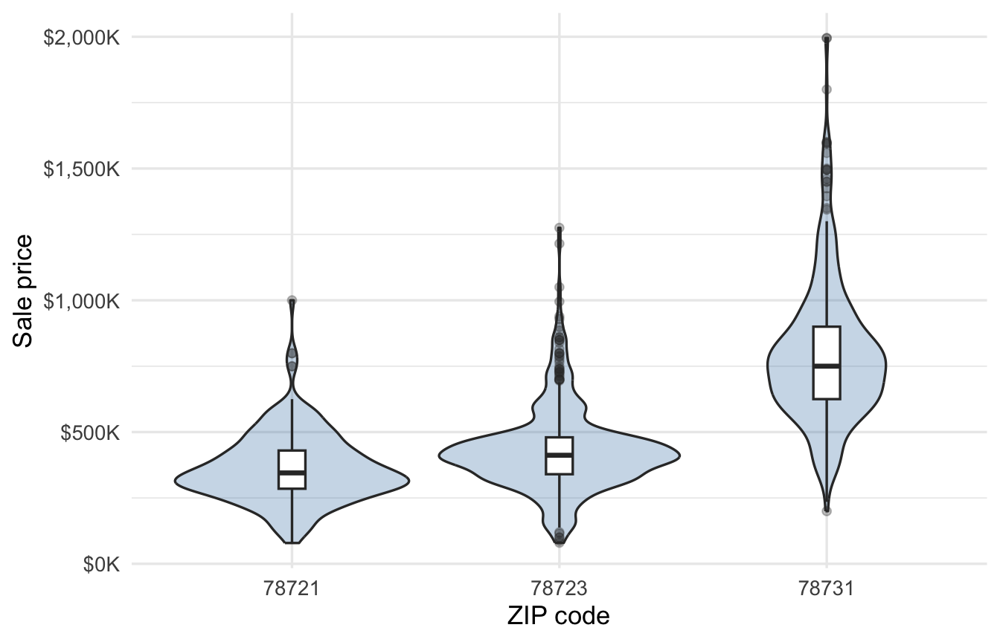
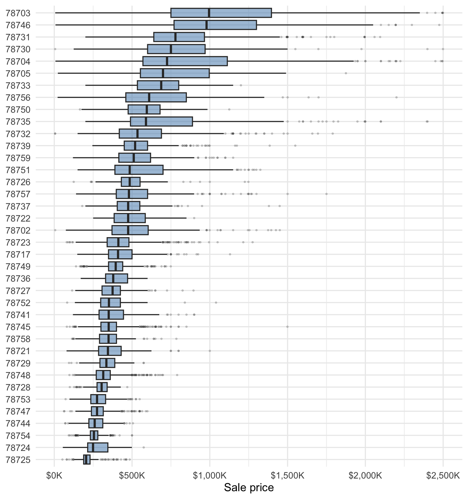
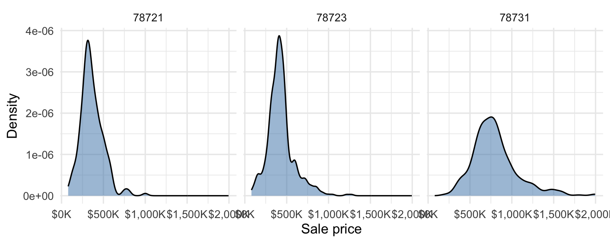
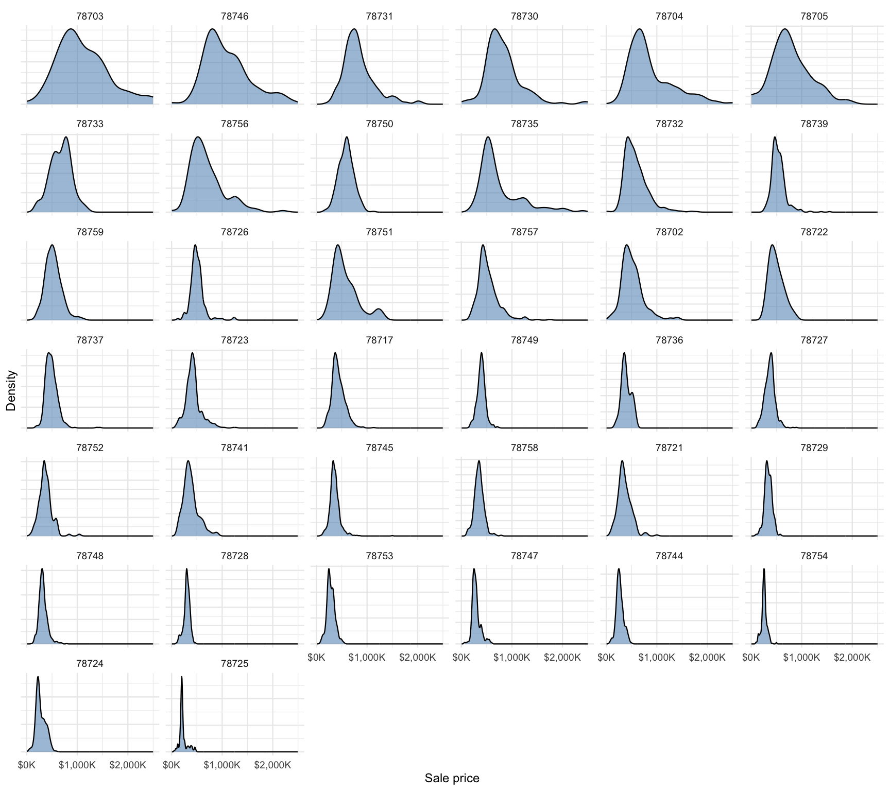
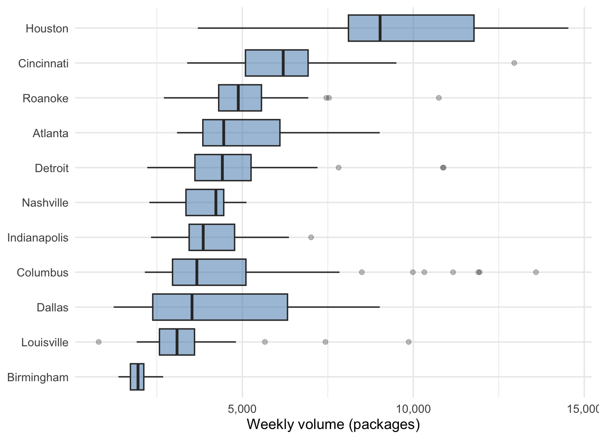
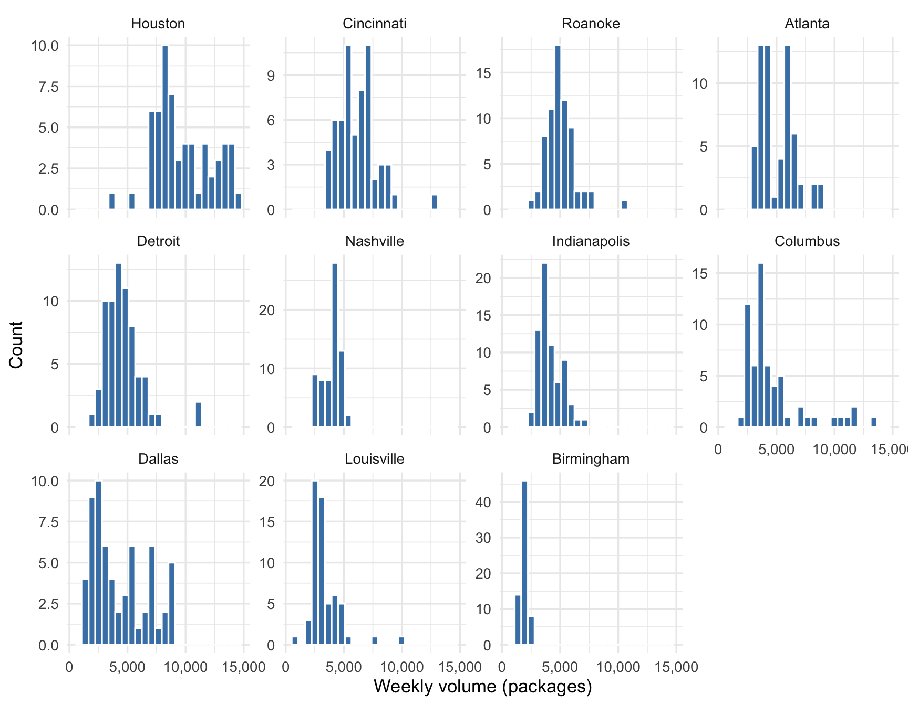

| ZIP code | Mean | Median | Std. dev. | Homes |
|---|---|---|---|---|
| 78721 | $361,428 | $345,000 | $132,970 | 217 |
| 78723 | $431,163 | $412,000 | $159,422 | 497 |
| 78731 | $796,980 | $750,000 | $270,893 | 389 |
| Overall | $546,458 | $465,000 | $275,015 | 1,103 |
8 A Quantitative Variable Across Groups
One combination of variable types remains: a quantitative variable paired with a categorical one. House prices across ZIP codes, wages across education levels, output across the arms of an experiment — in each case the categorical variable splits the data into groups, and the question is typically how the quantitative variable’s distribution differs from group to group. Every tool from the single-variable chapters — means, medians, standard deviations, histograms, density plots — still applies; the move is to compute them within each group and put the results side by side in a way that preserves meaningful interpretations.
8.1 Summary statistics by group
For computing numeric summaries, we calculate the same statistics as in Section 3.1 and report them by group. Table 8.1 does this for sale prices in the three-ZIP Austin subset.
If possible, we want to use a meaningful ordering in a table like this. Here it happens to be that sorting by the mean, median, or standard deviation all give the same order as simply sorting by ZIP code. Were this not the case, we would want to choose an order that is meaningful, just like in Section 6.4.
8.2 Box plots and violin plots by group
A table is most useful if precise numeric values are important, but often we are trying to communicate broader, overall patterns and in that case there’s no substitute for plots. This is where box and violin plots are most useful — their compactness makes it relatively easy to compare many groups at once. Here are the box plots for each ZIP code:

And here are violin plots, which convey more detailed information about the distribution of prices in each ZIP code (at the cost of a busier visual display):

The full housing dataset has 45 ZIP codes; with a large number of groups it can be useful to flip the axes and sort by a meaningful summary statistic, like the median price (given the apparent skew):

If some groups are very small, the box and violin plots can be misleading. Before reading too much into strange-looking distributions for any group, check the group size. In the full Austin data, 7 of the 45 ZIP codes have fewer than 20 sales (and 4 have exactly one). For this crowded display, 30 is a practical cutoff rather than a general rule. Another option is to combine the small groups into an “Other” category; this option makes the most sense when the collapsed categories are similar in some way other than their small sample size.
8.3 Small multiples
Boxes and violins compress each group’s distribution to fit many on one axis. The alternative is to give every group its own small panel — a layout called small multiples — drawing the same plot in miniature, once per group. Here are the three ZIP codes included in the small Austin houses dataset:

And again, in the full dataset:

As in the stacked bar and box plots we’ve already seen, it’s a good idea to apply a meaningful order to the panels.
Let’s see another example: The kroger data records weekly sales of packaged, sliced American cheese at Kroger grocery stores in 11 U.S. cities — Atlanta, Birmingham, Cincinnati, Columbus, Dallas, Detroit, Houston, Indianapolis, Louisville, Nashville, and Roanoke. We have 706 store-week observations with four variables: the sales volume vol (packages sold that week), the retail price per package, whether the store ran an in-store promotional display that week (disp), and the city. A retailer’s first question is how sales differ across its markets, and that is a quantitative-by-categorical question with 11 groups. Table 8.2 starts with the numbers.
| City | Mean | Median | Std. dev. | Weeks |
|---|---|---|---|---|
| Houston | 9,796 | 9,029 | 2,457 | 61 |
| Cincinnati | 6,182 | 6,195 | 1,671 | 61 |
| Roanoke | 5,009 | 4,882 | 1,216 | 68 |
| Atlanta | 5,078 | 4,455 | 1,505 | 61 |
| Detroit | 4,628 | 4,416 | 1,589 | 68 |
| Nashville | 3,926 | 4,226 | 776 | 68 |
| Indianapolis | 4,117 | 3,856 | 951 | 68 |
| Columbus | 4,636 | 3,670 | 2,686 | 61 |
| Dallas | 4,357 | 3,528 | 2,354 | 61 |
| Louisville | 3,335 | 3,090 | 1,318 | 61 |
| Birmingham | 1,912 | 1,948 | 284 | 68 |

The boxes rank the markets cleanly, but 11 compressed boxes start to hide shape. Figure 8.7 spreads the same groups into small multiples, this time using histograms:

The small multiples idea extends to any plot type; small multiples of scatter plots, for example, provide a quick look at how associations between two variables change across groups. We’ll see that in the next chapter, along with other techniques for visualizing more than two variables at once.